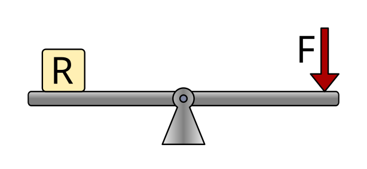
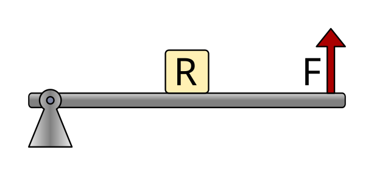
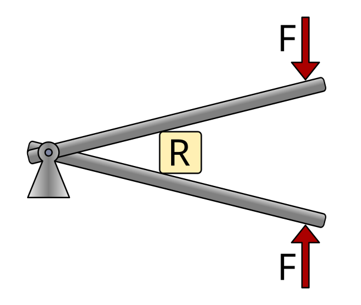
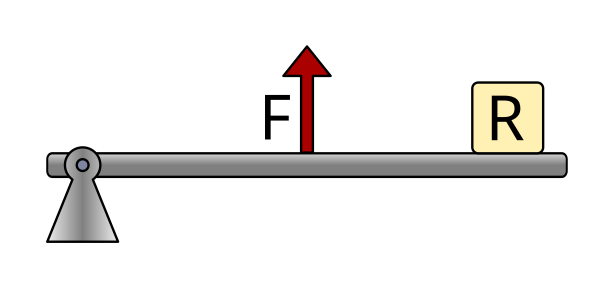

Palancas¶
La palanca es una máquina simple formada por una barra rígida que gira alrededor de un punto de apoyo llamado fulcro.
Las palancas se pueden utilizar para realizar varias funciones:
- Transmitir una fuerza o un desplazamiento desde un punto a otro. Es el caso de unas tijeras que transmiten la fuerza y movimiento desde unos dedales adaptados a la mano, hasta la hoja de corte.
- Aumentar la fuerza ejercida. Es el caso de un cascanueces o unos alicates.
- Aumentar el desplazamiento aplicado. Es el caso de un remo o de una caña de pescar.
Dependiendo de la situación de la fuerza aplicada (F) de la resistencia a mover (R) y del fulcro (△) podemos distinguir tres tipos de palancas.
Palancas de primer género¶
Las palancas de primer género tienen el apoyo en el medio de la barra, entre la fuerza aplicada y la resistencia.
{kind=link}
Ejemplos de este tipo de palanca son un balancín, unas tijeras o unos alicates.

Palancas de segundo género¶
Las palancas de segundo género tienen la resistencia en el medio de la barra, entre el fulcro y la fuerza aplicada. El fulcro se encuentra en un extremo.
{kind=link}
Ejemplos de este tipo de palanca son una carretilla, un cascanueces o un sacacorchos.
{kind=link}
Palancas de tercer género¶
Las palancas de tercer género tienen la fuerza aplicada en el medio de la barra, entre el fulcro y la resistencia. El fulcro se encuentra en un extremo.
{kind=link}
Ejemplos de este tipo de palanca son unas pinzas de depilar, nuestro antebrazo cuando sube la mano o una caña de pescar.

Cálculo de fuerzas y distancias¶
La fórmula para calcular las fuerzas y distancias involucradas en una palanca iguala los torques producidos por las fuerzas. El torque es el producto de una fuerza por su distancia al punto de apoyo, de manera que la fórmula queda como sigue.

Siendo
F1 = Fuerza aplicada 1
d1 = Distancia desde la fuerza 1 hasta el punto de apoyo
F2 = Resistencia o fuerza 2
d2 = Distancia desde la fuerza 2 hasta el punto de apoyo
Las distancias pueden medirse en metros, centímetros, milímetros, pulgadas, etc. Pero ambas distancias deben medirse siempre con la misma unidad.
Las fuerzas pueden medirse en kilogramos-fuerza o en Newtons, siempre que ambas fuerzas se midan con la misma unidad.
Ejercicio alicates¶
Como ejemplo, vamos a calcular la fuerza que realizan unos alicates a los que aplicamos una fuerza de 10kgf en el mango, con las siguientes distancias.

El primer paso será escribir los datos del problema y traducir los valores de distancia a la misma unidad, por ejemplo, en milímetros.

A continuación escribimos la fórmula y sustituimos los valores conocidos.

Por último despejamos la ecuación y calculamos el valor de la incógnita con las mismas unidades que tenía la fuerza conocida.
Ejercicio carretilla¶
En este ejercicio vamos a calcular la fuerza que hay que realizar para levantar una carretilla que lleva en su interior un peso de 40kgf. Las dimensiones de la carretilla simplificada son las siguientes.

El primer paso será escribir los datos del problema. En este caso no es necesario convertir las unidades de distancia, pues ambas distancias nos las dan en centímetros.

Como podemos ver, para calcular la distancia desde la fuerza 1 hasta el punto de apoyo es necesario sumar las dos distancias que aparecen en el dibujo.
A continuación escribimos la fórmula y sustituimos los valores conocidos.

Por último despejamos la ecuación y calculamos el valor de la incógnita (F1) con las mismas unidades que tenía la fuerza conocida, kilogramo-fuerza.